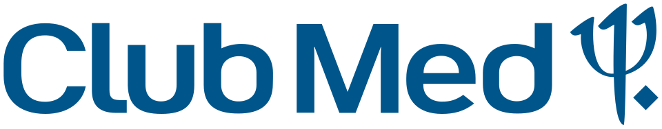

홈 > 브랜드 매거진 > 클럽메드
클럽메드
클럽메드(Club Med)는 1950년 설립된 프랑스 기반의 올인클루시브 리조트·여행 브랜드이다.
산업 분야 여행·호스피탈리티 · 공개 등급 자료 기반 · 브랜드 평가 4.3 ★


한눈에 보는 브랜드
클럽메드(Club Med)는 1950년 벨기에 출신 제라르 블리츠가 스페인 마요르카섬 알쿠디아 해변에 텐트형 휴양촌을 세우며 시작한 올인클루시브 리조트의 개척 브랜드다. 텐트를 공급하던 프랑스 사업가 질베르 트리가노가 합류해 사업으로 키웠고, 숙박·식음·스포츠·강습·키즈케어를 한 요금에 담는 모델을 정립했다.
현재는 2015년 1월 경영권을 인수한 중국 푸싱(Fosun) 산하로, 2024년 6월 기준 40개국에 67개 리조트를 운영하며 2024년 사업 규모 20억 9,000만 유로, 연간 이용객 약 150만 명에 이른다.
브랜드 관점
핵심 차별점은 단순 숙박이 아니라 식음·주류·스포츠 강습·키즈케어·액티비티를 한 요금으로 묶은 올인클루시브 리조트라는 점이다. 그 경험을 떠받치는 것이 GO(젠틸 오르가니자퇴르, 친절한 직원) 문화로, 1951년 도입된 GO·GM 개념은 직원이 단순 서비스 제공자가 아니라 손님과 함께 즐기는 동반자라는 정체성을 만들었다.
2010년대 이후 전략의 축은 프리미엄 전환이다. 2015년 푸싱 인수로 자본을 확보한 뒤 업스케일·고급 세그먼트로 재편을 가속해, 2024년에는 전 객실 규모가 업스케일 이상으로 전환됐다.
인수의 또 다른 함의는 아시아 확장으로, 중국이 프랑스에 이어 2대 시장으로 올라서며 이용객이 12만 명 수준으로 늘었다. 한국 시장에서는 발리·몰디브·푸켓 등이 가족여행 수요와 맞물려, 만 4~10세 대상 미니클럽과 패밀리 오아시스·커넥팅 룸 같은 가족 친화 구성이 핵심 소구점이 된다.
시작과 성장
출발점은 전후 유럽의 상처를 잊고 국적을 넘어 함께 어울리는 휴양 공동체를 꿈꾼 제라르 블리츠였다. 수구 선수 출신이자 레지스탕스였던 그는 1950년 여름 마요르카섬 알쿠디아 해변에 군용 잉여 텐트와 식기로 휴양촌을 차렸고, 약 2,400명이 별 아래 텐트에서 자며 수상스키와 페탕크를 즐기고 모닥불 주위에서 노래했다.
텐트를 대던 캠핑 사업가 질베르 트리가노가 이듬해부터 운영에 깊이 관여해 흩어진 아이디어를 사업 구조로 바꿨고, 식음·활동·숙박을 한데 묶는 올인클루시브 형식과 1951년 GO·GM 개념이 이 시기에 자리 잡았다. 운영보다 분위기 연출에 강했던 블리츠는 1953년 재정난으로 물러났고 트리가노 체제가 브랜드를 글로벌 휴양 기업으로 키웠다.
마지막 전환점은 2015년 1월 중국 푸싱이 약 9억 3,900만 유로에 경영권을 인수한 것으로, 이후 노선은 유럽 의존도를 낮추고 업스케일·프리미엄으로 재편하는 방향으로 분명해졌다.
브랜드 아이덴티티
브랜드의 뿌리에는 스포츠·자연·함께 나누는 행복이라는 창업자의 가치가 있고, 국적과 일상을 잠시 내려놓는 휴양 공동체라는 지향이 일관되게 흐른다. 시각적 상징은 바다의 신 포세이돈의 삼지창(트라이던트)으로, 1964년 로고에 등장해 해변과 해양 액티비티를 표상했고 1990년대에 명칭이 클럽 메디테라네에서 클럽메드로 줄며 형태가 현대화됐다.
타깃은 가족·커플·액티브 여행객이며, 보이스는 따뜻하고 활기차며 격의 없는 환대를 앞세운다. GO와 손님의 거리를 좁히는 친근함이 메시지 전반의 기조다.
제품과 서비스
주력은 올인클루시브 리조트로, 알프스·캐나다·일본·중국 등의 스키 리조트와 발리·몰디브·푸켓·푼타카나 등의 비치 리조트로 나뉜다. 스키 상품은 항공·트랜스퍼·숙박·식음·리프트권·강습·키즈케어를 한 요금에 포함하며, 상위 라인인 익스클루시브 컬렉션(익셉시오날 등급)은 적은 인원·전용 응대·매일 제공되는 샴페인 같은 프리미엄 요소를 더한다.
가격대는 중상위~고급 구간이며, 자사 한국 사이트와 여행사 채널을 통해 패키지로 판매된다.
현재 상태
현재 소유주는 2015년 인수한 중국 푸싱(Fosun)이며, 회장은 앙리 지스카르 데스탱이다. 본사는 파리에 있다.
리조트 규모는 2024년 6월 기준 40개국 67개로 집계되며, 2024년 전 객실 규모가 업스케일 이상으로 전환됐고 보르네오(말레이시아 사바)·남아프리카 등 신규 개장이 2026년에 예정돼 있다. 단, 푸싱 비공개 협상가 일부 세부와 한국 단일 시장의 정확한 방문객·매출 수치는 공식적으로 공개되지 않아 미공개로 표기한다.
타임라인
BI/CI 변천사

대표 로고대표 브랜드 마크함께 읽을 브랜드
 패션·럭셔리 · 편집 검수자라
패션·럭셔리 · 편집 검수자라자라는 패션을 예측하기보다 시장의 반응을 빠르게 읽고 다시 매장으로 돌려보내는 브랜드다. 트렌드를 길게 기획하는 대신 고객 반응과 유통 속도를 무기로 삼아, 패션을...
 여행·호스피탈리티 · 편집 검수탐스
여행·호스피탈리티 · 편집 검수탐스탐스는 제품 구매를 개인의 선의와 연결한 참여형 브랜드다. 신발은 상품이지만, 브랜드의 차별성은 소비자가 구매 행위를 통해 사회적 의미에 참여한다고 느끼게 만든 구조...
 기술·전자 · 편집 검수미니
기술·전자 · 편집 검수미니미니는 작은 크기를 약점이 아니라 개성과 태도의 언어로 바꾼 자동차 브랜드다. 미니의 디자인은 실용성만을 말하지 않는다. 작음, 경쾌함, 도시적 감각을 결합해 차체...
 여행·호스피탈리티 · 자료 기반아시아나항공
여행·호스피탈리티 · 자료 기반아시아나항공아시아나항공(Asiana Airlines)은 1988년 설립된 한국 2위 항공사로, 2024년 대한항공에 인수됐다.
 여행·호스피탈리티 · 자료 기반야놀자
여행·호스피탈리티 · 자료 기반야놀자야놀자(Yanolja)는 2005년 이수진이 창업한 한국 1위 숙박·여행 예약 플랫폼이자 트래블 테크 기업이다.
 기술·전자 · 자료 기반라인
기술·전자 · 자료 기반라인라인(LINE)은 2011년 네이버 일본법인이 출시한 모바일 메신저로, 일본·대만·태국 등에서 국민 메신저로 자리 잡았다. 현재 운영사는 LY Corporation이...
 여행·호스피탈리티 · 자료 기반대한항공
여행·호스피탈리티 · 자료 기반대한항공대한항공(Korean Air)은 한진그룹 계열의 대한민국 대표 국적 항공사로, 1969년 한진이 국영 항공사를 인수해 출범했다.
 여행·호스피탈리티 · 자료 기반제주항공
여행·호스피탈리티 · 자료 기반제주항공제주항공(Jeju Air)은 애경그룹 계열의 항공사로, 2005년 설립된 한국 최초이자 최대 저비용 항공사(LCC)다.